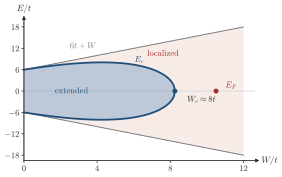
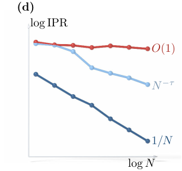
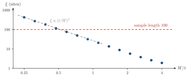

Page 14 of 15 of this session
9.10b Random disorder and the special role of one dimension
What does a potential that is really random do to the states of a material, and why is one dimension special? We will now see that in three dimensions a strong random potential gives the Anderson insulator, which has states at every energy and still does not conduct. In one dimension any random potential localizes every state, with a localization length \(\xi\propto(t/W)^2\) at weak disorder close to the band center.
\[\mathrm{IPR}(\psi) = \sum_i |\psi_i|^4, \qquad \sum_i |\psi_i|^2 = 1. \tag{9.12}\]
This is the inverse participation ratio of Section 9.10a, which separates the extended, critical and localized states. The weight of the normalized state on site \(i\) is \(|\psi_i|^2\). The IPR falls as \(1/N\) for a state that is extended over the \(N\) sites of the sample, and it does not depend on \(N\) for a localized state.
Fully disordered case. Now we take an onsite potential that is really random, with strength \(W\), \(H = -t\sum_n (c_n^\dagger c_{n+1} + \text{h.c.}) + \sum_n w_n\, c_n^\dagger c_n\), where \(w_n\) is taken uniformly from \([-W,W]\). At \(W=0\) this is an ordinary clean metal, with the band structure of the periodic hopping alone, and as \(W\to\infty\) every eigenstate becomes concentrated on a single site. In dimension \(d\geq 3\) there is a real Anderson localization transition at a finite critical disorder \(W_c\). There is a real mobility edge that separates extended metallic states from localized states. Below the transition, or at any energy on the extended side of a mobility edge, the system conducts.
Above the transition, there are states at every energy, so there is no spectral gap in the density of states, but these states cannot carry current, so there is a transport gap. This means that the Anderson insulator is an insulator with no gap at all in its spectrum. This is a very unusual state of matter compared with every band insulator or Mott insulator that we have seen so far in this course. The regions of extended and localized states are sketched in Schematic 9.16.

In a finite sample we tell the regions apart by how the \(\mathrm{IPR}\) of (9.12) changes with the size \(N\), which we met in Section 9.10a and show again here.

The special role of one dimension. In \(d=1\) no real metallic phase survives at any non-zero disorder in the thermodynamic limit. According to the scaling theory of localization, the same holds in a marginal way in \(d=2\). An arbitrarily small \(W>0\) localizes every state at long enough distances. What survives is a finite localization length \(\xi(W)\). For weak disorder close to the band center of the 1D model, it scales as \(\xi(W) \propto (t/W)^2\), which diverges as \(W\to 0\). A finite sample that is shorter than \(\xi(W)\) still looks metallic in practice, and only when the length of the sample is larger than \(\xi(W)\) do we see the localized, insulating behavior in transport. This is the exact sense in which “weak disorder in 1D” and “genuinely metallic” are never the same statement, although they can look the same at short length scales.
In one dimension a random potential of any strength \(W>0\) localizes every state. At weak disorder and close to the band center the localization length grows as
\[\xi(W)\propto\left(\frac{t}{W}\right)^2 ,\]
so a sample that is shorter than \(\xi\) still looks metallic.

In the one-dimensional chain at weak disorder we reduce \(W\) by a factor \(2\). By which factor does the localization length \(\xi\) close to the band center change?
Show the answers
- A. ✗ False
This is false. For \(\xi\propto(t/W)^2\) the dependence is quadratic. Going from \(W=0.5t\) to \(0.25t\) gives \(\xi\) a factor \(4\), and not \(2\).
- B. ✓ True
This is true. With \(\xi\propto(t/W)^2\), halving \(W\) multiplies \(\xi\) by \(2^2=4\). A state with \(\xi=100\) sites becomes \(400\) sites, and it is still localized.
- C. ✗ False
This is false. Any disorder localizes, but \(\xi\) depends on \(W\). For \(\xi=100\) sites a chain of \(20\) sites looks extended, and reducing \(W\) makes \(\xi\) larger.
In \(d=3\) the onsite energies \(w_n\) are random and uniform in \([-W,W]\). The disorder \(W\) is above the critical value \(W_c\). The Fermi level is in the region of localized states. Which statement describes this Anderson insulator?
Show the answers
- A. ✗ False
This is false. A band insulator has no states at the Fermi level. In the Anderson insulator at \(W=20t\) the density of states near the band center is about \(1/(2W)=0.025/t\) per site, which is finite. Eight cubes of \(10^3\) sites give between about \(0.022/t\) and \(0.027/t\) in the window \(|E|<5t\).
- B. ✓ True
This is true. The density of states is finite inside the band, so there is no spectral gap. Localized states at different positions do not connect, so at \(T=0\) the typical conductance falls as \(e^{-2L/\xi}\), with \(\xi\) the decay length of the amplitude, \(|\psi|\sim e^{-x/\xi}\).
- C. ✗ False
This is false. Above \(W_c\) the mobility edges have met at the band center, so no extended state is left at the Fermi level. The typical conductance of a sample of length \(L\) decays as \(e^{-2L/\xi}\), with \(\xi\) the decay length of the amplitude, so it goes to zero for large \(L\).
A chain has the hopping \(t\) and random onsite energies \(w_n\), uniform in \([-W,W]\).
\[H=-t\sum_n\left(c_n^\dagger c_{n+1}+\text{h.c.}\right)+\sum_n w_n\,c_n^\dagger c_n\]
Which law gives its localization length \(\xi\) close to the band center at weak disorder?
Show the answers
- A. ✗ False
This is false. This law gives a factor \(2\) each time \(W\) is halved. A transfer matrix at the band center gives \(\xi\) between about \(24\) and \(26\) sites at \(W=t\) and between about \(98\) and \(108\) sites at \(W=0.5t\), over six realizations, so the factor is about \(4\).
- B. ✓ True
This is true. The transfer matrix at the band center gives \(\xi W^2/t^2\) between about \(24\) and \(29\) for \(W=0.25t\), \(0.5t\) and \(t\), over six realizations, so \(\xi\approx26\,(t/W)^2\). A longer run, with eight realizations of \(2\times10^5\) sites from \(W=0.25t\) to about \(t\), gives the slope \(-2.0\) of \(\ln\xi\) against \(\ln W\).
- C. ✗ False
This is false. This law gives a factor \(e^2\approx7.4\) from \(W=0.5t\) to \(0.25t\). The transfer matrix gives \(\xi\) between about \(98\) and \(108\) sites at \(0.5t\) and between about \(380\) and \(460\) sites at \(0.25t\), over six realizations, a factor of about \(4\).
In a disordered chain we find \(\xi=100\) sites at \(W=0.5t\). At weak disorder \(\xi\propto W^{-2}\). Find \(\xi\) at \(W=0.25t\). Then find the disorder \(W\) at which \(\xi\) reaches \(1000\) sites.
Solution
The law \(\xi\propto W^{-2}\) means that \(\xi W^2\) is a constant, here \(100\times(0.5t)^2=25\,t^2\). At \(W=0.25t\) we get
\[\xi=\frac{25\,t^2}{(0.25t)^2}=400\ \text{sites},\]
so halving \(W\) gives a localization length four times longer. For \(\xi=1000\) sites we need
\[W=\sqrt{\frac{25\,t^2}{1000}}=0.158\,t\approx0.16\,t ,\]
which is \(0.5t/\sqrt{10}\), since a factor \(10\) in \(\xi\) needs a factor \(\sqrt{10}\) in \(W\). The transfer matrix at the band center gives \(\xi W^2\approx26\,t^2\), close to the \(25\,t^2\) of this problem.
So a chain of \(1000\) sites looks metallic only when \(W\) is below about \(0.16t\). The weaker the disorder, the longer the sample that we need to see the localization in transport, and it grows as \(W^{-2}\).
Try it. Run the cell and look at the left plot, with the average of \(1/\lambda\) against the random potential. It is already finite at \(v=0.5\) and it grows smoothly, with no threshold, as in the one-dimensional argument above. Compare it with the quasiperiodic plot, which stays near zero up to \(v\approx2\).
Notebook check-in: session9.ipynb, “The impact of disorder in different systems” (Core), “Extended and localized states in quasicrystals” (Challenge), and “Localization due to random disorder” (Core)
Change the strength of the quasiperiodic modulation, and separately the strength of the random disorder, and compute (9.12) for the eigenstates that you obtain in each case. The random potential of the cells has the full width v or w, which is \(2W\) of this page. Look at how the \(\mathrm{IPR}\) changes from a behavior like \(1/N\) to a behavior like \(O(1)\) as you increase the strength of the potential. Try to find by eye where the change from extended to localized states happens in each of the two models, and compare it with the language of critical points and mobility edges above.